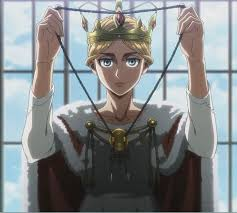
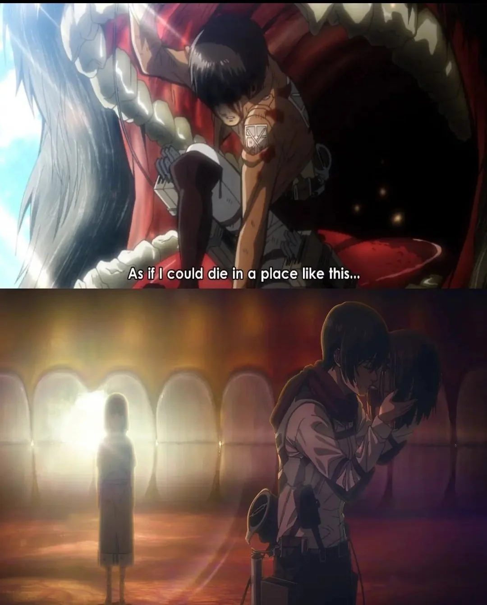
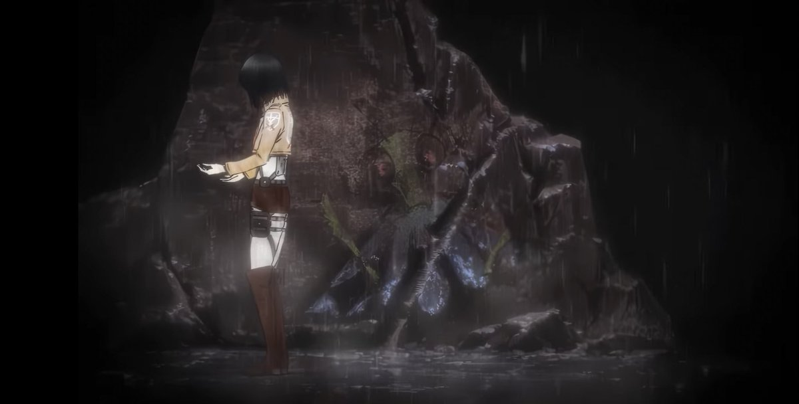

Dans L'Attaque des Titans, Eren Jäger déclenche le Grand Terrassement, une catastrophe où il veut détruire le Monde Extérieur pour protéger l'île de Paradis et permettre à ses amis d'être vus comme des héros, et non comme une menace. Pour y arriver, il passe un pacte avec Ymir Fritz, l'ancêtre des Eldiens, et utilise le pouvoir du Titan Originel. Ce pouvoir, mélangé à ceux du Titan Assaillant et du Titan Marteau d'Armes, lui permet de se transformer en une créature immense, capable de guider les Titans du Mur dans leur marche destructrice. Ce moment semble avoir été discrètement annoncé plus tôt dans l’histoire, notamment lors du couronnement d'Historia Reiss comme Reine de Paradis. Quand elle remet une médaille au Bataillon d’Exploration, la forme de cette médaille rappelle étrangement l’apparence du Titan Originel d’Eren pendant le Grand Terrassement. Cela donne l’impression que tout était déjà lié dès ce moment-là.
Au tout début du récit, les fans ont découvert avec stupeur la dure réalité du monde de L'Attaque des Titans, dans lequel personne ne semblait être à l'abri de la mort. Car lors de la Bataille de Trost, Eren avait disparu pendant quelque temps après avoir été avalé par un Titan. Alors que beaucoup pensaient que le protagoniste pourrait difficilement s'en remettre, d'autant qu'il avait perdu un bras et une jambe en voulant secourir Armin, il avait tout de même déclaré qu'il ne pouvait pas mourir dans "un endroit pareil". Pourtant, c'est bel et bien dans la bouche d'un Titan qu'Eren va rendre son dernier soupir, avec Mikasa qui va se frayer un chemin jusque dans la bouche d'Eren, afin de décapiter son vrai corps.
Le parallèle entre Mikasa et la menthe religieuse dans Shingeki no Kyojin réside dans la symbolique du sacrifice et de l’acte d’amour tragique. La menthe religieuse, connue pour dévorer le mâle après l’accouplement, incarne un équilibre entre création et destruction : elle agit par instinct pour garantir la survie de la génération future, même si cela implique la mort de son partenaire. Cet acte, bien qu'apparemment cruel, est profondément ancré dans la nature et la perpétuation de la vie. Mikasa, de manière similaire, se retrouve dans une position où elle doit mettre fin à la vie d’Eren, la personne qu’elle aime le plus, pour protéger le monde et permettre à l’humanité de continuer à exister. Ce geste n’est pas motivé par de la haine ou de la colère, mais par un amour profond et sacrificiel. Tout comme la menthe religieuse consomme son partenaire pour nourrir une nouvelle vie, Mikasa coupe la tête d’Eren pour arrêter le Grand Terrassement et offrir à l’humanité une chance de survie. Ce détail nous a été glisser dans l’opening.
L’absence d’oreilles chez Armin sous sa forme de Titan Colossal est un symbole puissant. Cela reflète son rejet inconscient des cris des morts causés par sa propre destruction et lui permet également de ne pas entendre l’ampleur du désastre qu’il provoque. Armin, profondément empathique, est hanté par les conséquences de ses actions. En tant qu’incarnation de la violence absolue, cette caractéristique visuelle souligne une déconnexion entre l’homme qu’il est, tourné vers le dialogue et la compréhension, et le monstre qu’il doit devenir, sourd à sa propre dévastation.
 Clique ici
Clique ici